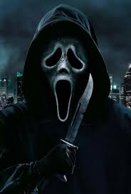

Ghostface
Ghostface é uma identidade adotada por vários personagens da série de filmes Scream (Pânico). O personagem é praticamente mudo, mas sua voz é expressa por Roger L. Jackson, independentemente de quem está por trás da máscara. O personagem apareceu pela primeira vez em Scream (1996) como um disfarce usado pelos adolescentes Billy Loomis (Skeet Ulrich) e Stu Macher (Matthew Lillard), durante sua série de assassinatos na cidade de Woodsboro. Ghostface foi criado por Wes Craven e Kevin Williamson. A máscara é baseada na pintura O Grito de Edvard Munch, e o personagem é usado principalmente como um disfarce para cada um dos antagonistas de cada filme para esconder sua identidade, ao conduzir assassinatos em série e, como tal, tem sido retratado por vários atores.
Não entre em pânico, afinal, Halloween não é apenas tempos de travessuras, mas também de doces!